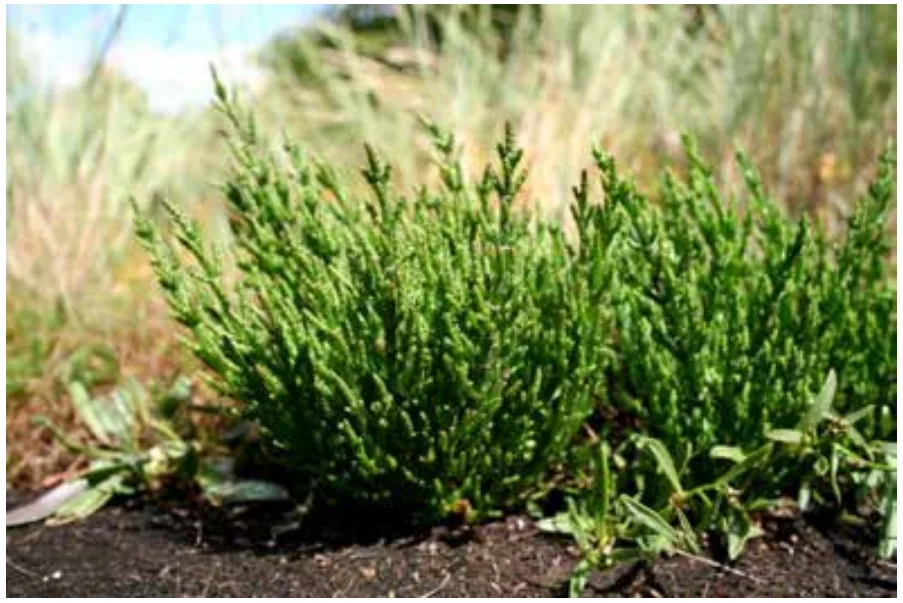
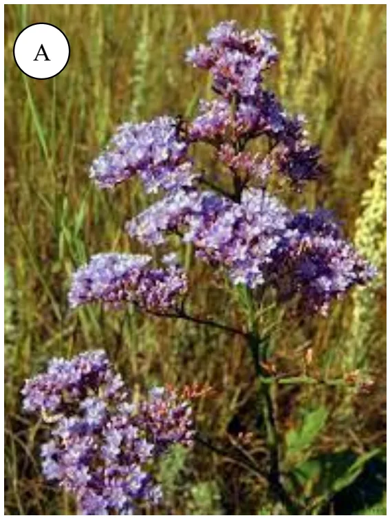
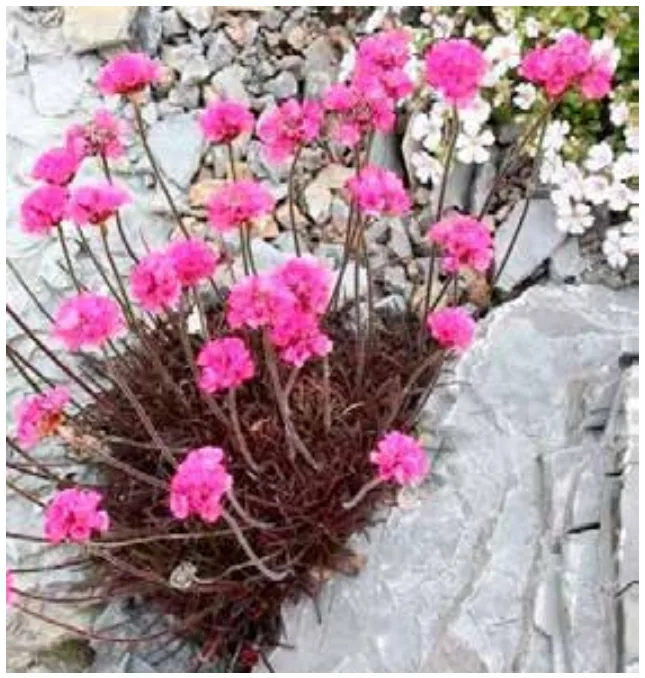
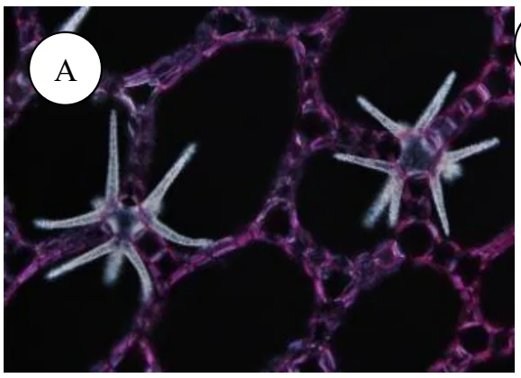
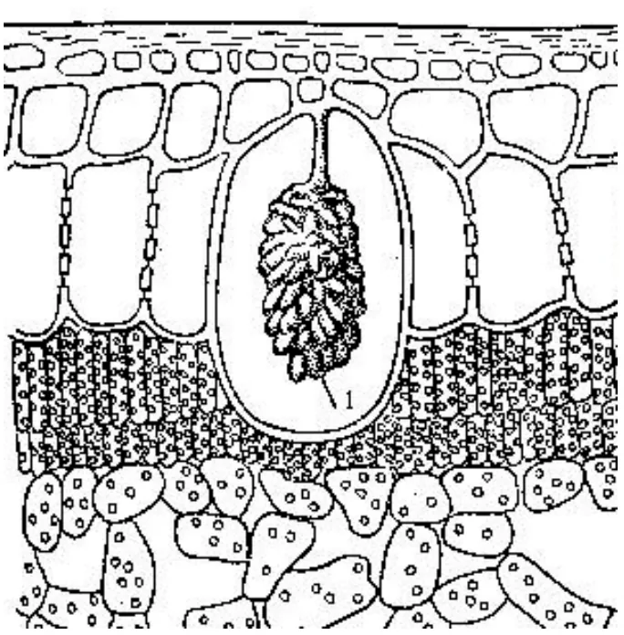
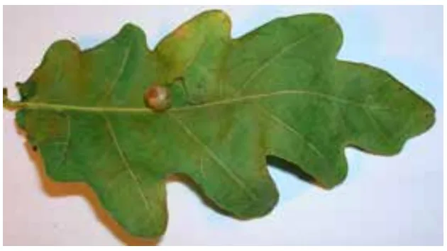
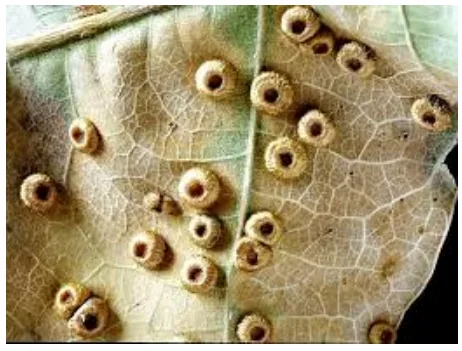
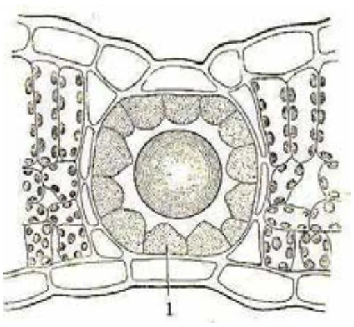
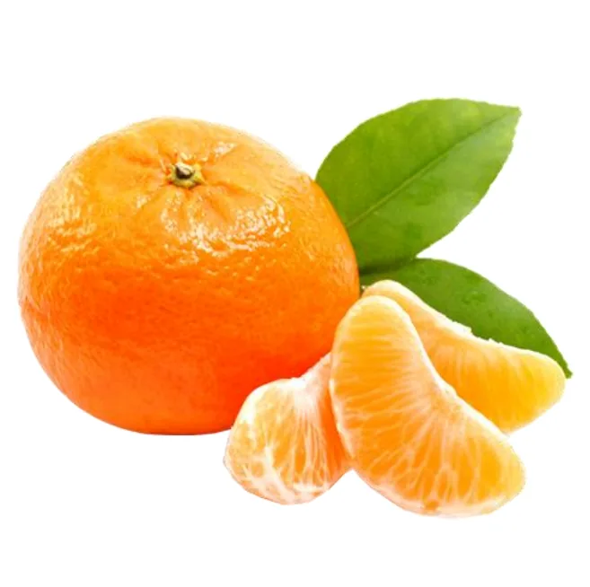
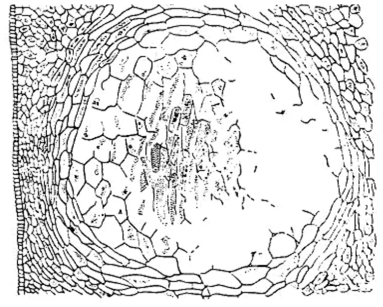

01Виділення речовин: екскреція й секреція
У тварин виділення продуктів життєдіяльності супроводжується виведенням їх з організму. У рослин цілісної видільної системи немає: вони можуть накопичувати непотрібні речовини у вакуолях, мертвих клітинах чи міжклітинниках, а виділяти — через спеціалізовані структури. Виділення виконує багато функцій: клітинні стінки з виділених полісахаридів захищають клітину, слизові чохли вкривають кореневі волоски, віск — листки, леткі фітонциди пригнічують мікроорганізми, нектар приваблює запилювачів чи ловить здобич хижих рослин.[1]
1.1Екскреція і секреція
Виділення буває пасивним й активним. Пасивне — за градієнтом концентрації — називають екскрецією; активне — із витратою енергії — секрецією. У рослин розрізняють три типи секреції:
- Мерокринова (від гр. meros — частина) — клітина лишається цілою. Має два різновиди: еккринова (мономолекулярна — через мембрану переносниками або іонними насосами) і гранулокринова — виділення речовин у везикулах (мембранних міхурцях з апарата Гольджі), що зливаються з плазмалемою й викидають вміст назовні або передають його у вакуолю.
- Апокринова — разом із секретом відокремлюється частина цитоплазми (наприклад, голівки сольових волосків галофітів).
- Голокринова — уся клітина перетворюється на секрет (слиз клітин кореневого чохлика).
Перемикайте тип секреції та спостерігайте, чи лишається клітина цілою.
02Зовнішні видільні структури
Секреторні структури поділяють за розташуванням на зовнішні (виділяють секрет у довкілля) і внутрішні (накопичують і зберігають). До зовнішніх належать залозисті волоски (трихоми) й емергенці, залозки, нектарники, осмофори, гідатоди; серед спеціалізованих — травні залозки хижих рослин та сольові залози.[1] Трихоми — похідні епідерми, а в утворенні емергенців беруть участь і глибші тканини; усі вони мають вигляд волосків чи виростів.
2.1Огляд зовнішніх структур
Клацайте на структури — кожна має схему чи фото, пояснення й приклади.
Від залозистих волосків — до сольових залоз і пасток хижих рослин.
Деякі деталі, які варто пам'ятати. Залозки відрізняються від волосків відсутністю чи дуже короткою ніжкою й завжди багатоклітинною голівкою; у губоцвітих секреторні клітини ефіроолійних залозок розташовані радіально, у складноцвітих — у два ряди й 3–4 яруси. Нектарники виділяють нектар — водний розчин цукрів з домішками білків, спиртів та ароматичних речовин. Осмофори — залозки на квітконосах, що виробляють ефірні олії власне аромату квітів. Гідатоди — «водяні продихи»: гутація характерна для рослин вологих місць і проростків, а у «Водному режимі рослин» вона розглянута як прояв кореневого тиску.
2.2Хижі рослини
Травні залозки комахоїдних рослин (росичка, венерина мухоловка, непентес, пухирчатка) виділяють рідину з травними ферментами й кислими полісахаридами. Комахи — для них додаткове джерело азоту, якого мало на бідних болотних ґрунтах. На листках росички є волоски-«щупальця» з червоними залозистими голівками в краплях прозорого липкого слизу; муха чи мураха прилипає, листок виділяє речовини (серед них — алкалоїди), що паралізують комаху, а волоски загинаються й обволікають її. Слиз містить ферменти, подібні до травного соку тварин, а поживні речовини засвоюються через залозки, що безпосередньо торкаються провідної системи листка. Листки росички сприймають навіть запахи дрібних тварин. Пухирчатка має під водою пастки-пухирці з тонким клапаном: дотик рачка чи комахи відкриває клапан, струмінь води втягує здобич, клапан закривається, і тварину перетравлюють ферменти.
2.3Сольові залози й волоски галофітів
Галофіти — рослини засолених ґрунтів (солончаків). Сольові залози переважно на листках виводять надлишок іонів на поверхню: спочатку сіль відкладається на кутикулі, потім змивається дощем. У сольових волосків дві клітини — голівка й ніжка; сіль нагромаджується у вакуолі верхньої клітини, а коли концентрація досягає певного рівня, голівка відпадає, і на її місці утворюється нова. Це приклад апокринової секреції.






Підвищуйте засоленість, вимикайте залози й викликайте дощ — спостерігайте солі в листку й кристали на його поверхні.
03Внутрішні видільні структури
Внутрішні структури формують і накопичують речовини, що лишаються всередині рослини. Якщо речовина токсична, навколо накопичувальної структури відкладається суберин (жироподібна речовина, що викликає опробковування) і ізолює її від тканин.[1]
3.1Ідіобласти, кристали й цистоліти
Секреторні клітини накопичують ефірні олії, слиз, дубильні речовини, кристали. Окремі клітини, розсіяні серед інших тканин, називають ідіобластами (від гр. idios — «своєрідний»): наприклад, клітини з кристалічним піском оксалату кальцію в листках красавки чи з ефірною олією в кореневищі лепехи. Ідіобласти з кристалами щавлевокислого кальцію — мертві клітини; кристали бувають друзами (зірчасті зростки) й рафідами (голчасті). У клітинах гіподерми, що межують з мезофілом, трапляються гроноподібні цистоліти: клітина розростається, а в ній нагромаджується вуглекисле вапно (листок фікуса).




Навіщо кристали? Найімовірніше, вони нейтралізують надлишок кальцію: у великих кількостях іони Ca²⁺ переущільнюють цитоплазму й знижують обмін. Рослина зв'язує кальцій щавлевою або вугільною кислотою; невеликі кількості кристалів відкладаються в листках, які під час листопаду забирають надлишок із собою.
Інший захисний механізм — дубильні речовини (таніни): утворюють складні сполуки з білками (на цьому ґрунтується дублення шкіри), мають терпкий смак (як у чаї), захищають від мікроорганізмів і беруть участь в окисних реакціях дихання. Найбагатші на них гали — нарости на листках дуба, спричинені личинками комах: якщо до краплі соку з галів додати кілька крапель 0,5 % розчину хлориду заліза (III), утворюється темнозабарвлена сполука — основа старовинного «чорнила».




3.2Секреторні вмістилища
Секреторні вмістилища — порожнини, заповнені секретом; різні за формою й походженням. Схізогенні утворюються розходженням клітин і формуванням великого міжклітинника з живим епітелієм; можуть бути довгими каналами (смоляні ходи хвойних, ефіроолійні канали зонтичних та аралієвих) чи короткими (листки евкаліпту). Смола має бактерицидні властивості й захищає від травоїдних. Лізигенні виникають розчиненням групи клітин після нагромадження в них речовин (ефіроолійні вмістилища навколоплідника цитрусових). Схізолізигенні — змішаного походження.






Порівняйте схізогенне й лізигенне формування — прокрутіть процес.
3.3Молочники
Молочники — живі клітини, що містять у вакуолях латекс (молочний сік) — емульсію білого, рідше помаранчевого чи червоного кольору. До складу входять вуглеводи (крохмальні зерна у молочайних, цукри у складноцвітих), білки (у фікуса), жири, слиз, дубильні речовини, ефірні олії й каучук. Серед каучуконосів промислове значення має тропічна гевея бразильська, у молочному соку якої до 40–50 % каучуку. Членисті молочники складаються з багатьох клітин, протопласти й вакуолі яких злилися в розгалужену систему (складноцвіті, макові); нечленисті утворені однією гігантською клітиною, що пронизує всю рослину (тутові, молочайні).
04Контрольні питання
Чим відрізняються екскреція й секреція?
Назвіть типи секреції в рослин і наведіть приклади.
Які зовнішні видільні структури відомі? Що виділяє кожна?
Як працює гідатода? За яких умов відбувається гутація?
Як росичка та венерина мухоловка ловлять і засвоюють здобич?
Як галофіти позбуваються надлишку солей?
Що таке ідіобласти, друзи, рафіди, цистоліти?
Яка роль кристалів оксалату кальцію в рослині?
Чим відрізняються схізогенні, лізигенні й схізолізигенні вмістилища?
Що таке молочники й латекс? Наведіть приклади.
05Джерела
Теоретичний матеріал цієї статті викладено за навчальним посібником; рисунки, позначені відповідним підписом, також взято з нього. Схеми й моделі, що не мають такого підпису, створені для цього конспекту.
- Прилуцька С. В., Бабицький А. І., Нестерова Н. Г., Ткаченко Т. А., Бойко О. А., Дащенко А. В. Фізіологія рослин: навчальний посібник. Частина ІІ. — Київ: НУБіП України, 2024. — 215 с. ISBN 978-617-8368-56-2. Розділ 5 «Фізіологія виділення речовин» (автор — Нестерова Н. Г.).